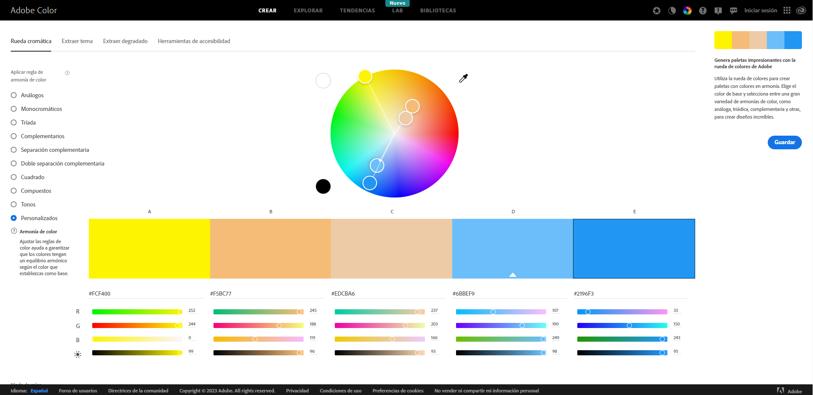

La paleta de colores que propongo para la Oficina de Turismo de Cádiz es la misma que se está observando en este mismo momento. Esta elección se debe a lo siguiente: Cádiz está muy asociada al mar y la playa por lo tanto, usaría tonos más claros de los llamados “colores arena”, como #EDCBA6, junto a un amarillo más chillón (conocido por su equipo de fútbol) como #FCF400 y completaría la paleta de colores con tonos de azul como #6bbef9. Gracias a la plataforma de Adobe Color podemos ver la paleta gráficamente:
